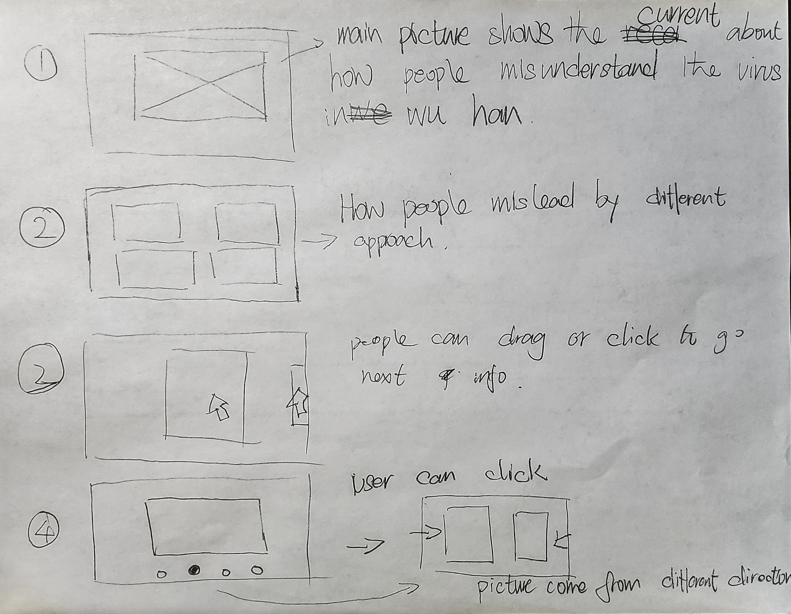

Final Project - Initial Sketches
For the initial sketch, I try to draw the main interaction I would like to have on my design first because I want to start with a simple element, and then add more function afterward. I hope I can create some information that has movement, and probably have about 4 sections to show the cause or the effect of fake news.